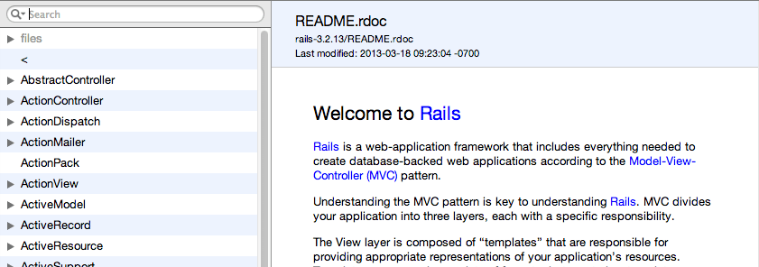

UPDATE: Manuel Meurer has picked up where Railsapi left off and hosts Ruby Docs where, with a few clicks of the mouse, you can generate any combination you want.
I dug into what they are doing and figured out the command to build the docs myself.

If you’re feeling lazy, and if I haven’t accidently removed them, you can grab the docs here:
If you want to build them yourself, keep reading.
Install the sdoc rubygem. Use Ruby 1.9.3.
Rails
-
Download the ZIP file of the version you are interested in.
For example, https://github.com/rails/rails/archive/v3.2.13.zip. Unzip it somewhere. -
Run the following command:
cd to/directory/containing/rails-3.2.13 sdoc -x test -x example -x bin -N --main rails-3.2.13/README.rdoc \ --title "Rails v3.2.13" --op ~/Desktop/rails-v3.2.13 rails-v3.2.13 -
Save
~/Desktop/rails-v3.2.13somewhere convenient.
Ruby
-
Get yourself a copy of the Ruby source. I use RVM so
~/.rvm/src/ruby-1.9.3-p327will work. -
Run the following command:
cd to/directory/containing/ruby-1.9.3-p327 sdoc --main ruby-1.9.3-p327/README -x test -x example -x bin -N \ --title "Ruby 1.9.3" --op ~/Desktop/ruby-1.9.3 \ ruby-1.9.3-p327 ruby-1.9.3-p327/READMENote: For Ruby 2.0.0 I had to add
-x lib/rdocas ironically rdoc fails to parse it’s own library files. -
Save
~/Desktop/ruby-v1.9.3somewhere convenient.
Combining Ruby and Rails
Manuel Meurer provided the following command to merge the documentation together:
sdoc-merge --title "Ruby 1.9.3, Rails 3.2.13" --op merged
--names "Ruby 1.9.3,Rails 3.2.13" Ruby\ 1.9.3 Rails\ 3.2.13